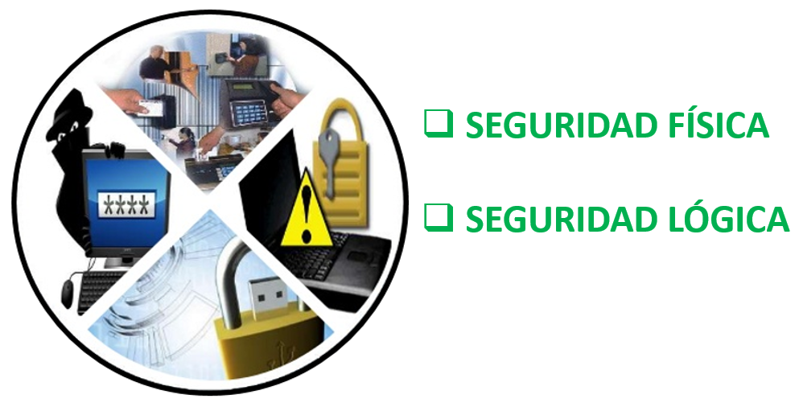
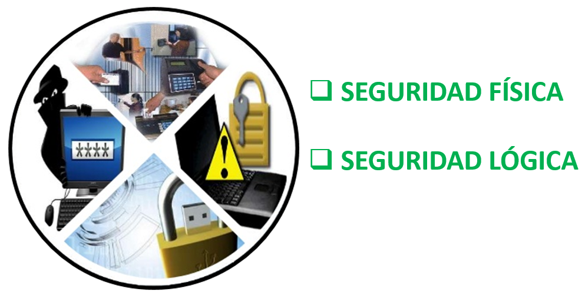
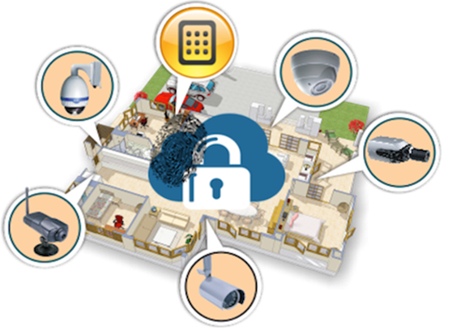

Tipos de Seguridad Informática



Aplicación de barreras físicas y procedimientos de control, como medidas de prevención y contramedidas ante una amenaza a los recursos e información confidencial.
Aplicación de barreras y procedimientos que resguarden el acceso a los datos y que permitan acceder a ellos solo al personal autorizado.
Obra publicada con Licencia Creative Commons Reconocimiento Compartir igual 4.0